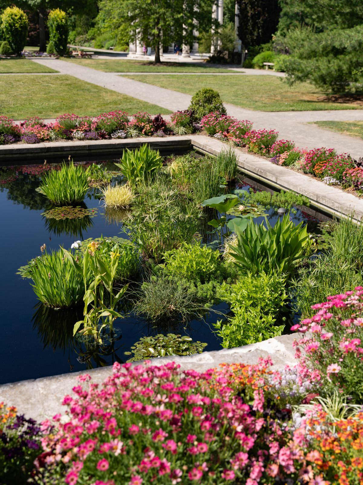

Une piscine biologique ne repose sur aucune magie ni aucun produit miracle. Elle reproduit, en accéléré et sous contrôle, ce qu'un étang sain fait naturellement : transformer les déchets organiques en nourriture pour les plantes, jusqu'à ce qu'il ne reste plus rien pour les algues.

Tout part d'un constat simple : ce qui rend une eau verte, ce n'est pas la saleté, ce sont les nutriments. Les algues ont besoin de trois choses pour proliférer — de la lumière, de la chaleur et des sels nutritifs, principalement des nitrates et des phosphates. On ne peut agir ni sur la lumière ni sur la chaleur. En revanche, on peut priver les algues de nourriture. C'est exactement le travail que fait une piscine biologique, en confiant ces nutriments à d'autres organismes, plus efficaces et beaucoup plus visibles : les bactéries et les plantes aquatiques.
L'eau ne s'arrête jamais. Elle boucle en permanence entre la zone où l'on nage et la zone où elle se régénère, avec un temps de séjour calculé.
Un ou plusieurs skimmers aspirent la pellicule de surface, là où se concentrent pollens, feuilles, insectes et résidus gras. Une bonde de fond ou une aspiration basse complète le dispositif au point bas.
L'eau passe dans un panier ou un filtre à brosses qui retient les particules grossières. Ce préfiltre protège la pompe et évite que les grosses matières n'aillent colmater le lagunage.
Le cœur du système. L'eau chemine lentement à travers les substrats minéraux du massif planté, de haut en bas ou horizontalement. C'est là que se joue l'épuration biologique.
L'eau épurée revient vers la baignade, souvent par une cascade ou un ruisseau qui la met en contact avec l'air et augmente sa teneur en oxygène dissous avant qu'elle ne reparte pour un tour.
Le dimensionnement se raisonne en temps de rotation : l'ensemble du volume du bassin doit passer par le lagunage en huit à vingt-quatre heures. Trop rapide, l'eau ne séjourne pas assez longtemps au contact des bactéries ; trop lente, elle stagne et l'oxygène se raréfie dans les couches profondes. Notre page filtration & lagunage détaille les schémas hydrauliques les plus courants.
On croit souvent que ce sont les plantes qui filtrent l'eau. En réalité elles interviennent en second, après un travail bactérien décisif.
Les matières organiques qui arrivent dans le lagunage se décomposent d'abord en ammonium, toxique. Des bactéries nitrifiantes le transforment en nitrites, puis d'autres en nitrates, nettement moins problématiques. Ce cycle de l'azote est la base de tout système aquatique équilibré.
Ces bactéries ne flottent pas : elles vivent en biofilm, fixées sur des surfaces. Plus la surface offerte est grande, plus la population bactérienne est nombreuse et plus l'épuration est rapide. D'où l'importance des substrats.
Les nitrates produits par les bactéries sont ensuite absorbés par les racines des plantes de berge et de marécage : iris des marais, joncs, massettes, menthe aquatique, prêles. Elles les convertissent en biomasse — feuilles, tiges, rhizomes.
C'est pourquoi la taille annuelle est indispensable : couper et retirer les plantes en fin de saison, c'est sortir physiquement du bassin les nutriments qu'elles ont captés. Si on laisse tout se décomposer sur place, les nutriments repartent dans l'eau au printemps suivant. Voir notre page plantes aquatiques.
Le lagunage n'est pas un simple bac de terre planté. C'est un massif minéral construit en couches, dont chaque granulométrie a un rôle.
| Matériau | Granulométrie courante | Rôle principal |
|---|---|---|
| Pouzzolane | 7/15 à 20/40 mm | Support bactérien — roche volcanique très poreuse, énorme surface de fixation |
| Gravier roulé lavé | 8/16 mm | Répartition de l'écoulement — évite les chemins préférentiels et le colmatage |
| Galets et gros graviers | 20/60 mm | Couche de fond drainante — reçoit l'eau et la distribue sous le massif |
| Sable lavé (usage limité) | 0/4 mm | Finition — filtration fine, mais colmate vite si mal placé |
| Zéolithe | 2/5 mm | Fixation de l'ammonium — utile en phase de démarrage ou en charge ponctuelle |
| Substrat de plantation pauvre | — | Ancrage des végétaux — surtout pas de terreau, qui relargue des nutriments |
La règle d'or est contre-intuitive pour un jardinier : dans une piscine biologique, on cherche un milieu pauvre. Aucun terreau, aucun engrais, aucun apport organique. Les plantes doivent puiser leurs nutriments dans l'eau — c'est précisément le service qu'on attend d'elles. Un lagunage installé sur de la terre végétale nourrit les algues pendant des années.
Un système vivant n'a pas un régime constant. Savoir ce qui est normal évite de paniquer — et surtout d'agir à contretemps.
La lumière et la température montent plus vite que l'activité biologique, encore en sortie de dormance. Les algues unicellulaires exploitent ce décalage : l'eau se voile de vert pendant une à trois semaines.
La bonne réaction est de ne rien faire de brutal. Ni vidange, ni produit anti-algues — qui tuerait aussi les bactéries et prolongerait le problème de plusieurs mois.
Les plantes tournent à plein régime, les bactéries aussi. L'eau se stabilise autour de 22 à 26 °C selon la région. Les algues filamenteuses peuvent apparaître sur les parois : on les retire à la main ou avec une brosse, ce sont surtout des indicatrices d'un excès ponctuel de nutriments.
Au-delà de 28 °C, l'eau contient moins d'oxygène dissous : la cascade et le ruisseau prennent alors toute leur importance.
Les feuilles mortes sont l'ennemi numéro un : un filet tendu en automne évite des mois de vase. On taille et on exporte les plantes après les premières gelées.
L'hiver, l'activité bactérienne chute presque à zéro, ce qui n'est pas grave puisque la charge organique disparaît aussi. La pompe tourne au ralenti ou s'arrête selon le système ; la glace de surface ne présente aucun danger pour un bassin correctement conçu.
L'oxygénation mérite une mention particulière. C'est elle qui conditionne l'efficacité des bactéries aérobies et la santé générale du bassin. Une lame d'eau, un ruisseau de quelques mètres ou un simple retour en cascade suffisent : le contact air-eau fait le travail. Notre page cascade & ruisseau montre comment l'intégrer sans qu'elle ressemble à une pièce rapportée. Le calendrier d'entretien reprend, mois par mois, les gestes à effectuer.
Le dimensionnement du lagunage n'est pas un poste sur lequel improviser : c'est lui qui décidera de la clarté de votre eau pendant vingt ans.
Sur une piscine naturelle neuve, pompe, skimmer, préfiltre, substrats et hydraulique représentent 2 500 à 8 000 € dans un budget global de 30 000 à 80 000 € TTC. L'électricité de circulation coûte ensuite 300 à 800 € par an.
Le débit de la pompe et le temps de rotation retenu, la surface et l'épaisseur du massif filtrant, la nature et le volume des substrats, le mode d'écoulement — vertical ou horizontal — et la liste des espèces plantées.
À un concepteur-constructeur habitué à la baignade naturelle. Décrivez votre projet en deux minutes : nous transmettons votre demande à un seul partenaire de votre région, qui vous rappelle sous 24 h ouvrées avec un tarif détaillé et gratuit.
Demander mon devis →Décrivez votre projet en 2 minutes, un concepteur partenaire vous répond sous 24 h.